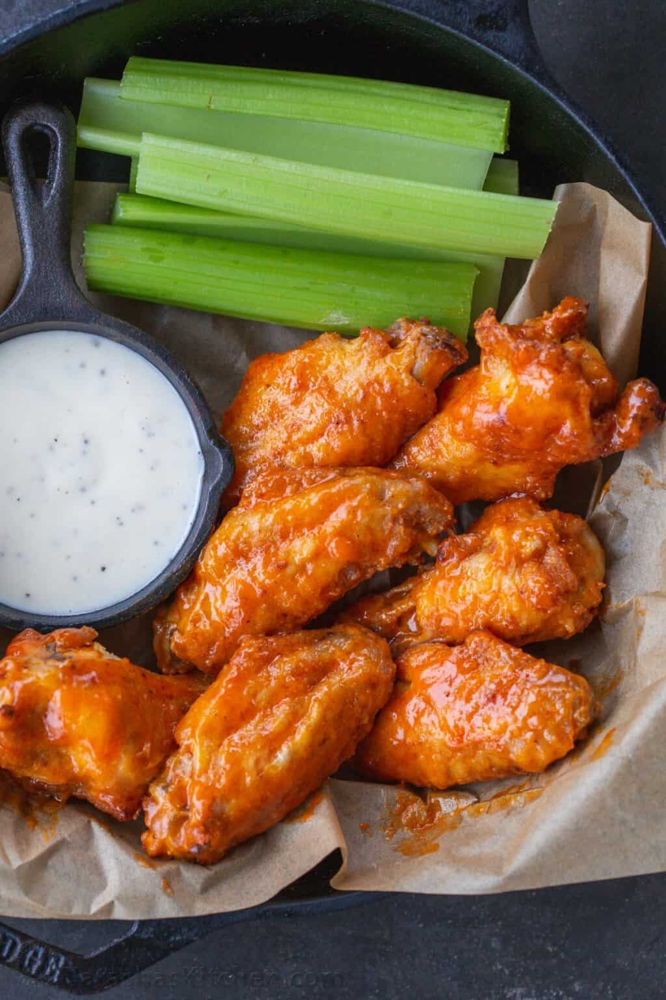

Wings

Description
Crispy baked chicken wings tossed together with a buttery, tangy buffalo sauce.
Ingredients
- Chicken wings
- Baking powder
- Salt
- Garlic powder
- Unsalted butter
- Frank's Original Red Hot Sauce
- Sugar
Steps
- Cut wings in half to separate the drums from the wingettes. Pat the wings dry with a paper towel. Preheat the oven and line a rimmed baking sheet with foil and place a wire rack over the pan.
- Combine baking powder, salt, and garlic powder.
- Place the chicken wings in a large mixing bowl and toss them in the dry seasoning until well-coated. Assemble the wings in a single layer over the rack.
- Bake in the center of the oven for 50 minutes, flipping halfway.
- In a medium bowl, stir together melted butter, sugar, and hot sauce.
- Transfer chicken wings to a bowl, and toss, drizzle with sauce and toss to coat. Serve with your favorite sauce.
- Serve the wings!